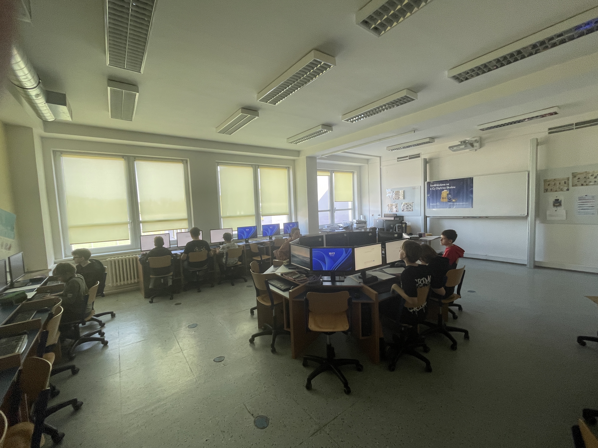
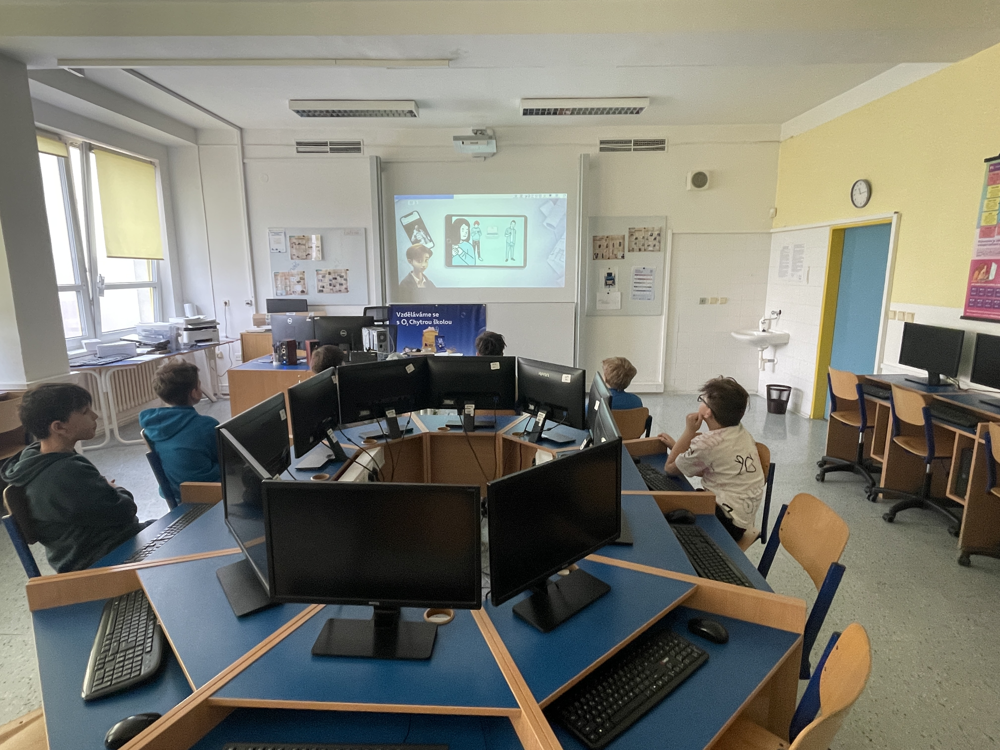

Od kresby k AI realitě
Jak se vlastní výtvarný návrh promění pomocí generativní AI? Žáci propojili kresbu, kreativitu a kritické hodnocení výsledku.
Prohlédnout projekt →Hraj si, zkoušej nové věci, přemýšlej a zjisti, jak umělá inteligence funguje – a jak ji používat chytře a bezpečně.
Vydej se na průzkum →O projektu
AI na Pastelce je místo, kde společně objevujeme svět umělé inteligence. Web vznikl v roce 2026 díky podpoře programu O2 Chytrá škola s cílem přiblížit umělou inteligenci žákům, rodičům i učitelům.
Chceme ukázat, co všechno AI dokáže, jak ji můžeme tvořivě využívat, ale také jak se v digitálním světě bezpečně orientovat a přemýšlet nad informacemi, které k nám přicházejí.
Prohlížej si jednotlivé části, zkoušej připravené aktivity, objevuj práce našich žáků a vracej se pro nové nápady. Stránka bude postupně růst a přibývat na ní budou další školní projekty, zkušenosti a inspirace.
✦ Hlavní výstup projektu
Díky projektu O2 Chytrá škola jsme vytvořili vzdělávací web AI na Pastelce. Na jednom místě propojuje aktivity pro žáky, inspiraci pro učitele, informace pro rodiče i ukázky toho, co jsme společně vytvořili.
Web nekončí posledním workshopem. Bude se dál rozvíjet, doplňovat a sloužit všem, kteří chtějí lépe porozumět světu umělé inteligence. Od prvních nápadů až po vlastní vzdělávací web.
Původní projektová nástěnka Padlet zůstává jako archiv průběhu a aktivit projektu.
Žáci své nápady proměnili v samostatné projekty. Připravili vlastní plakáty, zkoumali obrázky vytvořené AI, hledali pravidla bezpečného používání a učili se vysvětlovat umělou inteligenci ostatním. Prohlédněte si jejich skutečné výstupy.
Jak se vlastní výtvarný návrh promění pomocí generativní AI? Žáci propojili kresbu, kreativitu a kritické hodnocení výsledku.
Prohlédnout projekt →
Digitální detektivové hledali chyby a zvláštní detaily, které nám pomáhají přemýšlet o důvěryhodnosti obrázků.
Prohlédnout projekt →
Žáci zjišťovali, jak umělá inteligence funguje a kde se s ní setkáváme. Své poznatky zpracovali do vlastních plakátků.
Prohlédnout projekt →
Žáci sestavili přehled informací a osobních údajů, které je důležité chránit a nesvěřovat nástrojům AI.
Prohlédnout projekt →
Žáci vytvořili vlastní soubor zásad, jak ověřovat informace, rozpoznávat podvrhy a nenechat se zmanipulovat.
Prohlédnout projekt →
Dvanáct plakátů, ve kterých žáci přemýšlejí o příležitostech i rizicích umělé inteligence.
Prohlédnout projekt →Co se u nás děje, co společně objevujeme a tvoříme? Tady najdeš střípky ze školních aktivit, workshopů a projektů, které budeme průběžně doplňovat.
Fotografie a momentky z workshopů, setkání a dalších aktivit, při kterých společně objevujeme svět umělé inteligence.
Prohlédnout fotografie →Ukázky nápadů, projektů a prací žáků, které vznikají při zkoumání a tvoření s umělou inteligencí.
Prohlédnout práce žáků →Nové aktivity, zajímavosti a zprávy o tom, jak se projekt AI na Pastelce postupně rozvíjí.
Čekají tě hry, tvoření i výzvy, které ti pomohou lépe porozumět umělé inteligenci.
Vyzkoušej zábavné hry a zjisti, jak se počítač učí rozpoznávat svět kolem nás.
Prozkoumat hry →Proměň nápady v obrázky, příběhy a další kreativní projekty.
Objevit tvoření →Hledej stopy, odhaluj nesrovnalosti a uč se ověřovat informace.
Přijmout výzvu →Poznej pravidla, která ti pomohou chránit soukromí a nenechat se napálit.
Zjistit více →Seznam se s umělou inteligencí jednoduše, na příkladech a vlastním zkoušením.
Začít objevovat →Prohlédni si projekty, které vznikly při školních aktivitách a workshopech.
Prohlédnout inspiraci →Materiály budeme postupně rozšiřovat tak, aby si tu každý našel něco užitečného.
Metodiky, inspirace do výuky, ověřené nástroje a náměty na aktivity.
Přejít na materiály →Srozumitelné informace, tipy pro bezpečné používání technologií a náměty k rozhovorům s dětmi.
Přejít na materiály →